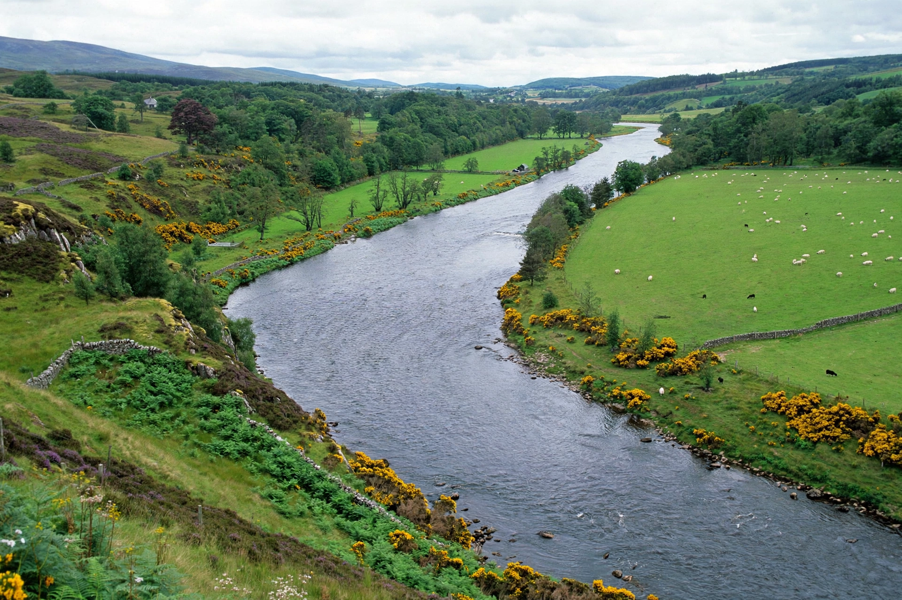

| River Don | |
|---|---|
| Country | Scotland |
| Length | 131 km (81 mi) |
| Source | Ladder Hills, Grampian Mountains |
| Mouth | North Sea at Aberdeen |

The River Don (Scottish Gaelic: Abhainn Dheathain) is a river in north-east Scotland, rising in the Grampian Mountains and flowing 131 km eastwards through Aberdeenshire to the North Sea at Aberdeen, just north of the River Dee.
The Don rises in the Ladder Hills and passes Strathdon, Alford, Kemnay, Inverurie and Dyce. In Aberdeen it flows through Seaton Park and under the medieval Brig o' Balgownie, one of Scotland's oldest bridges, before reaching the sea at the Bridge of Don.
The Don is noted for salmon and especially wild brown trout fishing, long regarded as one of Scotland's finest brown trout rivers.
Aberdeen · River Dee